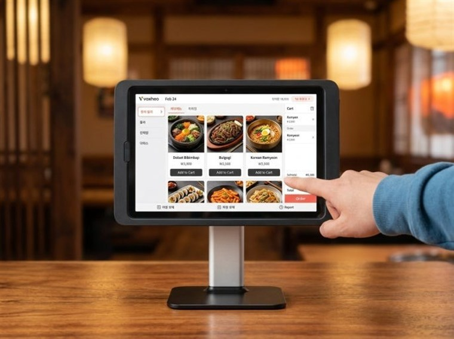
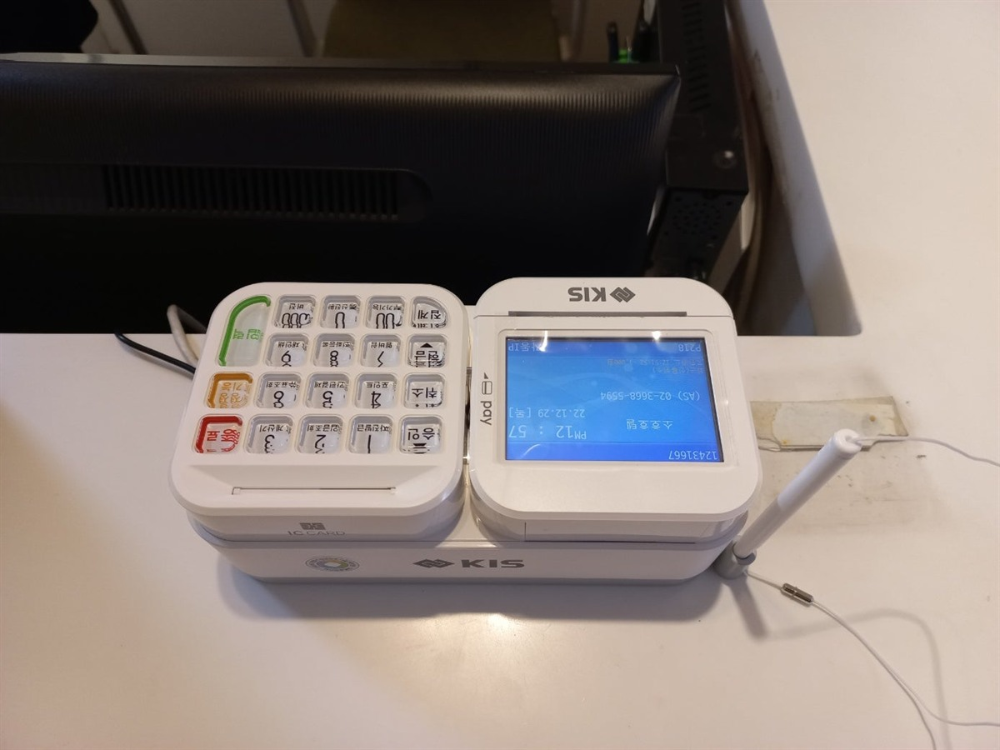
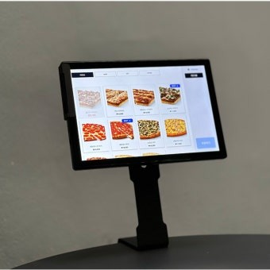
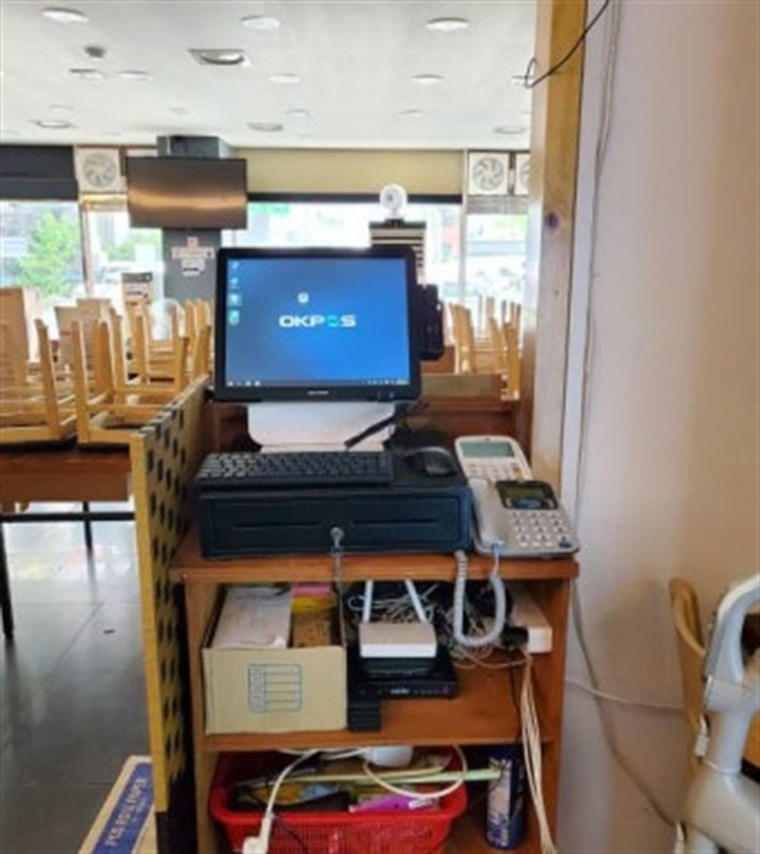

설치 후기
H포스가 직접 설치한 전국 카드단말기·포스기·키오스크·무인자판기 현장 기록입니다. (전체 164건 · 2/17 페이지)

홍천 테이블오더 설치 완료 — 고깃집 추가주문 잡은 태블릿 주문·결제
홍천 고깃집에 테이블오더(태블릿오더) 설치 완료. 손님이 자리에서 직접 주문·결제, 추가 주문·회전 상승. 포스 연동, 설치비 무료.

태안 포스기 설치 완료 — 안면도 관광상권 매장 통합 관리 구축
태안 안면도 관광상권 매장에 포스·카드단말기 설치 완료. 무선·유선 카드결제기, 모든 카드사 일괄 가맹, 설치비 무료·평균 4일 이내.

블루투스 카드단말기와 무선 이동식 카드단말기 차이점?
같은 무선이라도 블루투스 카드단말기는 스마트폰·태블릿에 붙여 쓰고, 무선 이동식(휴대용) 카드단말기는 통신이 내장돼 폰 없이 단독 결제됩니다. 어떤 상황에 어떤 걸 신청해야 하는지 정리했습니다.

신용카드단말기 설치·신청 방법 — 유선·무선 뭐가 맞을까? 업종별 총정리
유선·무선·이동식 카드단말기 차이, 업종별로 뭘 골라야 하는지, 신청 절차와 카드사 가맹까지. 사업 준비하는 사장님을 위한 신용카드단말기 완전 가이드.

테이블오더 설치·신청 방법 총정리 — 새로 오픈하는 식당·음식점 사장님 필독
태블릿오더·셀프오더 뭐가 다른지, 설치하기 좋은 업종, 업체 고르는 5가지, 신청 절차까지. 새로 오픈하는 식당·음식점 사장님을 위한 테이블오더 완전 가이드.

카드단말기 설치, 인터넷선과 전화선 차이 있을까요?
카드단말기 인터넷선(랜선)·전화선·무선 방식은 뭐가 다를까요? 승인 속도·안정성·필요 회선과 상황별 추천, 설치할 때 자주 묻는 것들까지 오픈 사장님 눈높이로 정리했습니다.

포스기 설치 임대·렌탈과 구매 차이점? 위약금 주의사항까지 총정리
오픈 사장님이 가장 많이 묻는 포스기·카드단말기 구매·임대·렌탈 차이와 위약금 함정, 업종별 추천 구성까지. 유선·무선·이동식·휴대용 카드단말기 고르는 법도 정리했습니다.

화성 무인자판기 설치 완료 — 동탄 무인 아이스크림 매장 냉동자판기
경기 화성 동탄 무인 아이스크림 매장에 냉동자판기를 설치했습니다. 아이스크림·냉동식품·밀키트 자판기와 셀프 결제까지 24시간 무인점포로 세팅.

원주 무인자판기 설치 완료 — 아파트 단지 무인점포 자판기
강원 원주 아파트 단지 상가에 음료·스넥·냉동 무인자판기를 설치했습니다. 셀프 결제·앱 원격관리로 24시간 무인 운영, 야간·주말 수요가 확실한 자리.

천안 포스기(POS) 설치 완료 — 불당동 고깃집 결제 구축
충남 천안 불당동 고깃집에 포스기와 카드단말기를 설치했습니다. 홀 회전이 빠른 매장에 포스+무선 단말기, 간편결제·QR·분할결제까지 구축.